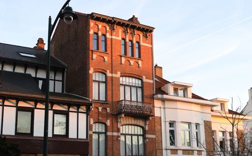

DesEY est une marque indé de T-shirts, spécialisé dans des designs locaux, minimalistes et respectueux de l'environement. Tous les designs sont réalisés à Bruxelles.
L'inspiration m'est venu en marchant dans le Châtelain, le sablon, ou encore les contrés lointaines de Woluwe Saint Lambert.


des t-shirts qu'on peut porter partout classes, mais passe-partout. Parfois, on veut passer inaperçus
j'ai étudié la création de jeux vidéo, j'aime les styles type Final fantasy tactic advance
je ne peux pas dessiner de personnages de fictions connus à cause des droits d'auteur, mais mes T-shirts vont s'inspirer de mangas comme Beastars ou DBZ
Harry Potter? Warhammer 40k? Donjons et Dragons? Zeker.
Grande source d'inspiration. Chaque bâtiment est différent de son voisin, c'est un grand bazar, mais le tout rend très bien